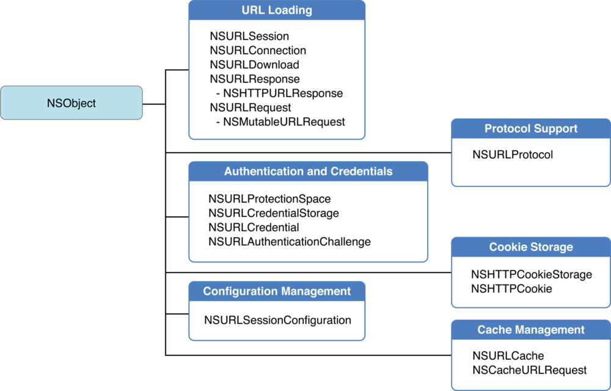
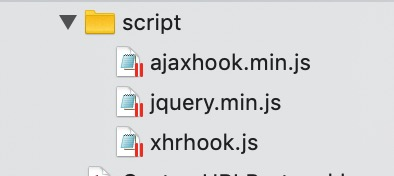
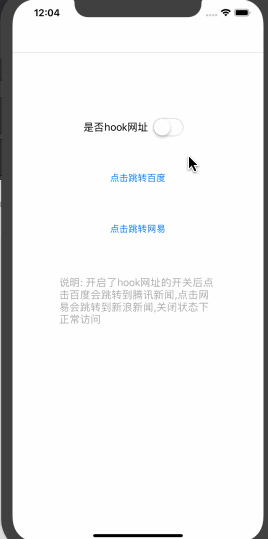

前言
最近手上有个需求,需要在一条网络请求上加上两个参数,按道理说直接在URL后面加上&xx=xxx就行了,但是因为各种原因,我只能把所有的网络请求拦截下来,然后找到我想要的那条请求,重新处理完之后再去请求.
了解NSURLProtocol
通过网上找资料发现我的需求可以通过NSURLProtocol来实现,而我们的请求基本都是通过一个叫做URL Loading System的东西来实现的,socket通信除外.来看一下URL Loading System的关系图

可以看到URL Loading System包含了网络请求类、网络验证类、URLSession初始化管理、以及我们需要的NSURLProtocol.
NSURLProtocol是一个处理URL数据加载的特殊协议类(抽象类),我们不能直接用它去实例化一个对象,而是要继承他去创建一个子类,并且在合适的时机去注册它,利用它我们可以重新自定义URL加载系统,具体来说利用它我们可以做的事情包括但不限于以下几种
- 修改请求头
- 修改请求的URL(加参数、重定向)
- 解决一些DNS被劫持的问题(使用ip直接访问)
- 拦截网络请求,做一些埋点
- 按我们自己的意愿缓存资源
Demo内容
我打算写一个简单demo,在主页面上有一个控制是否拦截请求的开关,没有打开的时候,点击百度和网易的按钮都是正常访问相应的网址,打开之后点击跳转百度会重定向到腾讯新闻,点击网易会重定向到新浪新闻,具体代码看Demo
思路
1、创建继承NSURLProtocol的子类CustomURLProtocol.
2、重写NSURLProtocol的方法,拦截并转发修改后的请求.
3、注册CustomURLProtocol.
创建CustomURLProtocol必须实现的几个方法
1 | + (BOOL)canInitWithRequest:(NSURLRequest *)request; |
1、重写方法canInitWithRequest:1
2
3
4
5
6
7
8
9
10
11
12
13
14
15
16
17/**
判断是不是需要hook请求,return yes就hook,然后处理转发,no就放行,不用我们进行处理.
这里有个需要注意的地方,正常流程是我们hook了这个请求,然后在startLoading中完成我们需要的操作,再通过URLSession转发出去这个时候我们需要给请求加一个属性来判断是否已经进行了处理,不然的话,流程就会变成拦截-->处理-->转发-->拦截,陷入死循环.
*/
+ (BOOL)canInitWithRequest:(NSURLRequest *)request
{
// NSLog(@"%s: %@",__func__, request.URL.absoluteString);
NSString *scheme = [[request URL] scheme];
if ([scheme caseInsensitiveCompare: @"http"] == NSOrderedSame || [scheme caseInsensitiveCompare:@"https"] == NSOrderedSame) {
//o判断是否已经处理过
if ([NSURLProtocol propertyForKey:kURLProtocolHandledKey inRequest:request]) {
return NO;
}
}
return YES;
}
2、重写方法canonicalRequestForRequest1
2
3
4
5
6
7
+ (NSURLRequest *) canonicalRequestForRequest:(NSURLRequest *)request {
NSMutableURLRequest *mutableReqeust = [request mutableCopy];
// 可以在这里添加request的header,如果不做操作直接return request也可以
return mutableReqeust;
}
3、重写方法requestIsCacheEquivalent:toRequest:1
2
3
4
5
6
+ (BOOL)requestIsCacheEquivalent:(NSURLRequest *)a toRequest:(NSURLRequest *)b
{
//啥都不做直接扔给系统
return [super requestIsCacheEquivalent:a toRequest:b];
}
4、重新方法startLoading:1
2
3
4
5
6
7
8
9
10
11
12
13
14
15- (void)startLoading
{
// NSLog(@"%s: %@",__func__, self.request.URL.absoluteString);
NSMutableURLRequest *request = [[self request] mutableCopy];
// 标示改request已经处理过了，防止无限循环
[NSURLProtocol setProperty:@(YES) forKey:HookPropertyKey inRequest:request];
if ([request.URL.absoluteString isEqualToString:@"https://www.baidu.com/"]) {
request.URL = [NSURL URLWithString:@"https://news.qq.com"];
}
else if ([request.URL.absoluteString containsString:@"https://www.163.com/"]) {
request.URL = [NSURL URLWithString:@"https://news.sina.com.cn"]; //跳转网易
}
[self requestData:request];
}
5、重写方法stopLoading1
2
3
4
5- (void)stopLoading
{
[self.task cancel];
self.session = nil;
}
到上面这一步我们对拦截请求的功能实现完了,但是我们还需要利用session将处理后的请求转发出去,相当于把session请求到的response又交给了原来的webview去处理,代码如下:1
2
3
4
5
6
7
8
9
10
11
12
13
14
15
16
17
18
19
20
21
22
23
24
25
26
27
28- (void)URLSession:(NSURLSession *)session task:(NSURLSessionTask *)task didCompleteWithError:(NSError *)error
{
if (error != nil) {
[self.client URLProtocol:self didFailWithError:error];
}else
{
[self.client URLProtocolDidFinishLoading:self];
}
}
- (void)URLSession:(NSURLSession *)session dataTask:(NSURLSessionDataTask *)dataTask
didReceiveResponse:(NSURLResponse *)response
completionHandler:(void (^)(NSURLSessionResponseDisposition disposition))completionHandler
{
[self.client URLProtocol:self didReceiveResponse:response cacheStoragePolicy:NSURLCacheStorageNotAllowed];
completionHandler(NSURLSessionResponseAllow);
}
- (void)URLSession:(NSURLSession *)session dataTask:(NSURLSessionDataTask *)dataTask didReceiveData:(NSData *)data
{
[self.client URLProtocol:self didLoadData:data];
}
- (void)URLSession:(NSURLSession *)session dataTask:(NSURLSessionDataTask *)dataTask willCacheResponse:(NSCachedURLResponse *)proposedResponse completionHandler:(void (^)(NSCachedURLResponse * _Nullable))completionHandler
{
completionHandler(proposedResponse);
}
注册CustomURLProtocol
1 | - (void) registerClass |
注册了之后URLProtocol会拦截所有的请求,当你拦截完你某些想要的请求后,不再拦截也是可以的,这时候我们可以注销掉CustomURLProtocol1
2
3
4
5- (void) unregisterClass
{
//注销
[NSURLProtocol unregisterClass:[CustomURLProtocol class]];
}
注意
1、一个是要注意给已经处理过的请求一个标识,告诉CustomURLProcol这个请求我已经处理过了,不需要再次处理了,不然的话会一直循环处理,因为你把处理完的请求转发出去了,相当于又一次请求了你处理完的URL,自然就会被我们的CustomURLProtocol拦截到,你不给标识的话就会导致一直循环,请求自然就无法完成了.具体可以看canInitWithRequest:和startLoading方法里面的处理.
2、上面这些可以hook所有的包括get和post请求,但是post请求会存在数据丢失的问题存在,这个问题又分为两种情况,一种是正常的session post请求(包括AFNetworking),还有一种是wkwebview中夹在的post请求,在这里我的解决方案是在加载wkwebview的时候我注入了script文件夹中的js去hook了ajax的请求,把body数据存储到了本地(NSUserDefaults存储,key为请求的url, value为body数据),在需要的时候再把body数据拿出来,操作都在以下method中,具体看代码:1
2
3
4
5
6
7
8
9
10
11
12
13
14
15
16
17
18
19
20
21
22
23
24
25
26
27
28
29
30
31
32
33
34
35
36
37
38
39
40
41
42
43
44-(void) requestData:(NSMutableURLRequest *) request {
NSInputStream *bodyStream = [request HTTPBodyStream];
[bodyStream open];
/*
一般的post请求在这边使用这个判断加操作就可以拿到body的数据,但是因为wkwebview在post请求的时候会自动丢掉body,
所以我们才需要script文件夹中的脚本去hook wkwebview的body数据
*/
//判断body里面是不是有数据,有数据就copy一份出来
if ([bodyStream hasBytesAvailable]) {
NSMutableData *data = [[NSMutableData alloc] init];
uint8_t buffer[1024] = {0};
while ([bodyStream hasBytesAvailable]) {
NSInteger len = [bodyStream read:buffer maxLength:1024];
if (len > 0 && bodyStream.streamError == nil) {
[data appendBytes:(void *)buffer length:len];
}
memset(buffer, 0, 1024);
}
request.HTTPBody = [data copy];
[bodyStream close];
}
else {
//body里面没有数据就去我们之前的缓存里面那数据
NSString *key = [[[request URL] absoluteString] lowercaseString];
NSString *data = [[NSUserDefaults standardUserDefaults] objectForKey:key];
[[NSUserDefaults standardUserDefaults] synchronize];
if (data != nil) {//缓存有数据
NSDictionary *dataJson = [NSJSONSerialization JSONObjectWithData: [data dataUsingEncoding:NSUTF8StringEncoding] options:0 error:nil];
if (dataJson != nil) {
[request setHTTPBody: [NSJSONSerialization dataWithJSONObject:dataJson options:0 error:nil]];
}
else {
[request setHTTPBody: [data dataUsingEncoding:NSUTF8StringEncoding]];
}
}
}
NSURLSessionConfiguration *configure = [NSURLSessionConfiguration defaultSessionConfiguration];
self.session = [NSURLSession sessionWithConfiguration:configure delegate:self delegateQueue:[NSOperationQueue new]];
self.task = [self.session dataTaskWithRequest:request];
[self.task resume];
}
脚本文件如图

js注入的代码1
2
3
4
5
6
7
8
9
10
11
12
13
14
15
16
17
18
19
20WKWebViewConfiguration *config = [WKWebViewConfiguration new];
//将js脚本注入,然后通过WebViewPostHandler方法拿到从网页端发送过来的数据
NSString *jspath = [[NSBundle mainBundle] pathForResource:@"ajaxhook.min.js" ofType:nil];
NSString *ajaxhook = [NSString stringWithContentsOfFile:jspath encoding:NSUTF8StringEncoding error:nil];
WKUserScript *sc = [[WKUserScript alloc] initWithSource:ajaxhook injectionTime:WKUserScriptInjectionTimeAtDocumentStart forMainFrameOnly:NO];
[[config userContentController] addUserScript:sc];
jspath = [[NSBundle mainBundle] pathForResource:@"jquery.min.js" ofType:nil];
NSString *jquery = [NSString stringWithContentsOfFile:jspath encoding:NSUTF8StringEncoding error:nil];
WKUserScript *jqsc = [[WKUserScript alloc] initWithSource:jquery injectionTime:WKUserScriptInjectionTimeAtDocumentStart forMainFrameOnly:NO];
[[config userContentController] addUserScript:jqsc];
jspath = [[NSBundle mainBundle] pathForResource:@"xhrhook.js" ofType:nil];
NSString *xhrhook = [NSString stringWithContentsOfFile:jspath encoding:NSUTF8StringEncoding error:nil];
WKUserScript *xhrhooksc = [[WKUserScript alloc] initWithSource:xhrhook injectionTime:WKUserScriptInjectionTimeAtDocumentStart forMainFrameOnly:NO];
[[config userContentController] addUserScript:xhrhooksc];
WebViewPostHandler *postHandler = [WebViewPostHandler new];
[[config userContentController] addScriptMessageHandler:postHandler name:@"save"];
我这边是利用WebViewPostHandler接收从web端发送过来的数据,然后保存下来了,具体看Demo吧,代码放太多了,看得有点晕.
Demo
效果图

最后奉上Demo传送门